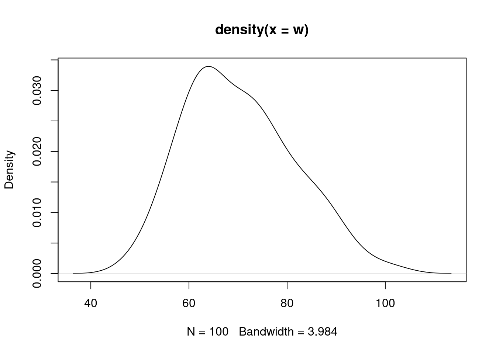

Se desea extraer una muestra aleatoria del grupo de participantes y probar que es aleatoria con respecto al sexo.
| \(Ho\): \(X\) es aleatoria |
| \(Ha\): \(X\) NO es aleatoria |
library(randtests)
x=sample(CarreraLuz22$sex, 100)
rachas<-as.numeric(x=="Hombre")
runs.test(rachas,alternative = "left.sided",threshold = 0.5,pvalue = "exact",plot=F)
Runs Test
data: rachas
statistic = 1.4255, runs = 58, n1 = 52, n2 = 48, n = 100, p-value =
0.9368
alternative hypothesis: trendExisten varias pruebas de hipótesis para verificar si una variable tiene un comportamiento aproximadamente normal.En todos los casos las hipótesis planteadas son:
| \(Ho\): \(X\) tiene distribución Normal |
| \(Ha\): \(X\) no tiene distribución Normal |
plot(density(w))
La prueba de Shapiro-Wilk se utiliza para verificar si una muestra de datos sigue una distribución normal. Se puede utilizar antes de realizar pruebas paramétricas que asumen normalidad, como la prueba t de Student o el análisis de varianza (ANOVA). Se recomienda realizar la prueba de Shapiro-Wilk cuando se tienen dudas sobre la normalidad de los datos, especialmente si se trabaja con muestras pequeñas (menos de 50 observaciones), ya que en muestras grandes la prueba puede ser sensible y detectar pequeñas desviaciones de la normalidad que no son relevantes en la práctica.
shapiro.test(w)
Shapiro-Wilk normality test
data: w
W = 0.97905, p-value = 0.1121Esta prueba no requiere la instalación de paquetes adicionales, está disponible en la configuración básica de R
Las siguientes pruebas requieren instalar y cargar el paquete:
normtest
# install.packages("normtets")
library(normtest)La prueba de Jarque-Bera ajustada se utiliza para verificar si una muestra de datos sigue una distribución normal. A diferencia de la prueba de Shapiro-Wilk, la prueba de Jarque-Bera es más adecuada para muestras grandes (más de 200 observaciones) debido a su mayor poder estadístico. Se recomienda utilizar la prueba de Jarque-Bera ajustada cuando se tiene una muestra grande y se quiere verificar la normalidad de los datos antes de realizar pruebas paramétricas que asumen normalidad.
ajb.norm.test(w)
Adjusted Jarque-Bera test for normality
data: w
AJB = 3.7737, p-value = 0.116La prueba de Frosini es una prueba estadística diseñada para verificar si una muestra de datos sigue una distribución normal. Esta prueba se basa en la comparación de la media y la varianza muestral con la media y la varianza de una distribución normal estándar. Sin embargo, la prueba de Frosini no es tan conocida ni ampliamente utilizada como otras pruebas de normalidad más comunes, como la prueba de Shapiro-Wilk o la prueba de Kolmogorov-Smirnov.
frosini.norm.test(w)
Frosini test for normality
data: w
B = 0.26557, p-value = 0.093La prueba de Geary, también conocida como razón de Geary o estadístico de Geary, es una medida de auto-correlación espacial que se utiliza en análisis espaciales para evaluar si existe autocorrelación espacial en un conjunto de datos. La prueba se basa en la comparación de las diferencias entre valores observados y valores vecinos en una serie de datos espaciales. Una razón de Geary cercana a 1 indica ausencia de autocorrelación espacial, mientras que valores significativamente más bajos pueden indicar autocorrelación espacial. La prueba de Geary se utiliza principalmente en estudios de geografía, ecología y otras disciplinas relacionadas con datos espaciales.
geary.norm.test(w)
Geary test for normality
data: w
d = 0.82206, p-value = 0.1355La prueba de Hegazy-Green se utiliza para verificar la normalidad de una muestra de datos. Se puede utilizar en diversos contextos, como en análisis de datos, estudios estadísticos y en la validación de modelos que asumen una distribución normal de los datos.
Se recomienda utilizar esta prueba cuando se desea verificar si una muestra de datos sigue una distribución normal y se quiere tener una alternativa a otras pruebas de normalidad más comunes, como la prueba de Shapiro-Wilk o la prueba de Kolmogorov-Smirnov. La prueba de Hegazy-Green puede ser útil cuando se desea explorar diferentes enfoques para verificar la normalidad de los datos, especialmente en investigaciones donde la normalidad es un supuesto importante.
hegazy1.norm.test(w)
Hegazy-Green test for normality
data: w
T = 0.10963, p-value = 0.0765hegazy2.norm.test(w)
Hegazy-Green test for normality
data: w
T = 0.019091, p-value = 0.1935La prueba de Jarque-Bera es una prueba de normalidad que se utiliza para verificar si una muestra de datos sigue una distribución normal. Esta prueba se basa en la asimetría y la curtosis de los datos. La asimetría mide la falta de simetría en la distribución de los datos, mientras que la curtosis mide la forma de la distribución en relación con una distribución normal.
En la prueba de Jarque-Bera, se calcula un estadístico de prueba que se distribuye asintóticamente como una distribución chi-cuadrado con 2 grados de libertad bajo la hipótesis nula de que los datos son normalmente distribuidos. Se compara este estadístico con un valor crítico de la distribución chi-cuadrado para determinar si se rechaza o no la hipótesis nula.
jb.norm.test(w)
Jarque-Bera test for normality
data: w
JB = 3.6821, p-value = 0.0955La kurtosis es una medida que describe la forma de la distribución de los datos en relación con una distribución normal. Indica qué tan puntiaguda o achatada es la distribución en comparación con una distribución normal. Una kurtosis alta indica una distribución más puntiaguda (colas más pesadas) que la distribución normal, mientras que una kurtosis baja indica una distribución más achatada (colas más ligeras) que la distribución normal.
La prueba de kurtosis se puede utilizar para verificar si la kurtosis de una muestra de datos es significativamente diferente de la kurtosis de una distribución normal. Sin embargo, es importante tener en cuenta que la kurtosis por sí sola no es una medida concluyente de la normalidad de los datos, ya que una distribución puede tener una kurtosis similar a la de una distribución normal y aún así no ser normal.
kurtosis.norm.test(w)
Kurtosis test for normality
data: w
T = 2.6449, p-value = 0.4195La prueba de asimetría se utiliza para evaluar si la asimetría de una muestra de datos es significativamente diferente de la de una distribución normal. La asimetría mide la falta de simetría en la distribución de los datos, indicando si los datos están sesgados hacia la izquierda o hacia la derecha en comparación con una distribución normal, que tiene una asimetría de 0.
Hay varias pruebas estadísticas que se pueden utilizar para probar la asimetría, como la prueba omnibus de D’Agostino-Pearson, la prueba de Jarque-Bera y la prueba de Shapiro-Wilk. Estas pruebas examinan diferentes aspectos de la distribución de los datos para determinar si se desvía significativamente de la normalidad.
skewness.norm.test(w)
Skewness test for normality
data: w
T = 0.4352, p-value = 0.0715a prueba de Spiegelhalter es una prueba estadística utilizada para evaluar si una muestra de datos sigue una distribución normal. Esta prueba se basa en la comparación de la curtosis y la asimetría de los datos con los valores esperados bajo una distribución normal.
La prueba de Spiegelhalter es una de las pruebas de normalidad menos comunes y no es tan ampliamente utilizada como otras pruebas más establecidas, como la prueba de Shapiro-Wilk o la prueba de Kolmogorov-Smirnov. Por lo tanto, se recomienda utilizar las pruebas más comunes y ampliamente aceptadas para verificar la normalidad de los datos.
spiegelhalter.norm.test(w)
Spiegelhalter test for normality
data: w
T = 1.2165, p-value = 0.868La prueba de Weisberg-Bingham es una prueba de normalidad que se utiliza para verificar si una muestra de datos sigue una distribución normal. Esta prueba se basa en la comparación de la curtosis y la asimetría de los datos con los valores esperados bajo una distribución normal.
Al igual que la prueba de Spiegelhalter, la prueba de Weisberg-Bingham no es tan común ni tan ampliamente utilizada como otras pruebas de normalidad más establecidas, como la prueba de Shapiro-Wilk o la prueba de Kolmogorov-Smirnov. Por lo tanto, se recomienda utilizar las pruebas más comunes y ampliamente aceptadas para verificar la normalidad de los datos.
wb.norm.test(w)
Weisberg-Bingham test for normality
data: w
WB = 0.98099, p-value = 0.139Las siguientes pruebas requieren instalar y cargar el paquete:
nortest
# install.packages("nortets")
library(nortest)La prueba de Anderson-Darling es una prueba de normalidad que se utiliza para verificar si una muestra de datos sigue una distribución normal. Esta prueba es una versión mejorada de la prueba de Kolmogorov-Smirnov, que es otra prueba comúnmente utilizada para verificar la normalidad de los datos.
La prueba de Anderson-Darling considera la diferencia entre los valores observados y los valores esperados bajo una distribución normal, dando más peso a las colas de la distribución que la prueba de Kolmogorov-Smirnov. Esto la hace más sensible a las desviaciones de la normalidad en las colas de la distribución.
ad.test(w)
Anderson-Darling normality test
data: w
A = 0.65549, p-value = 0.08464La prueba de Cramér-von Mises es una prueba de bondad de ajuste que se utiliza para verificar si una muestra de datos sigue una distribución teórica específica, como una distribución normal. Esta prueba es una alternativa a la prueba de Anderson-Darling y a la prueba de Kolmogorov-Smirnov, y se basa en la comparación de los valores acumulados observados y los valores acumulados esperados bajo la distribución teórica.
La prueba de Cramér-von Mises es especialmente útil cuando se desea evaluar si los datos siguen una distribución específica en lugar de simplemente evaluar si los datos son normales. Esta prueba es sensible a las desviaciones de la distribución en la cola, lo que la hace útil para detectar desviaciones no solo en la media y la varianza, sino también en la forma de la distribución.
cvm.test(w)
Cramer-von Mises normality test
data: w
W = 0.1096, p-value = 0.08168La prueba de Lilliefors es una versión modificada de la prueba de Kolmogorov-Smirnov (KS) que se utiliza para verificar si una muestra de datos sigue una distribución normal. Mientras que la prueba de KS estándar asume que los parámetros de la distribución subyacente son conocidos, la prueba de Lilliefors estima estos parámetros a partir de los datos, lo que la hace más apropiada cuando no se conoce la verdadera distribución de los datos.
La prueba de Lilliefors es útil cuando se desea verificar si los datos siguen una distribución normal sin tener que asumir que los parámetros de la distribución son conocidos. Sin embargo, al igual que con la prueba de KS estándar, la interpretación de los resultados de la prueba de Lilliefors puede depender del tamaño de la muestra, por lo que es importante tener en cuenta este factor al interpretar los resultados.
lillie.test(w)
Lilliefors (Kolmogorov-Smirnov) normality test
data: w
D = 0.085674, p-value = 0.06747La prueba chi-cuadrado de Pearson se utiliza para comparar la distribución observada de los datos con una distribución teórica, como una distribución normal. En el contexto de la normalidad, esta prueba compara la distribución de frecuencias observada en los datos con la distribución de frecuencias esperada bajo la hipótesis de que los datos siguen una distribución normal.
Para realizar la prueba chi-cuadrado de Pearson para la normalidad, se dividen los datos en intervalos y se cuenta el número de observaciones en cada intervalo. Luego, se calcula la frecuencia esperada para cada intervalo bajo la hipótesis de normalidad. La prueba compara las frecuencias observadas y esperadas utilizando la estadística de prueba chi-cuadrado.
Es importante tener en cuenta que, al igual que otras pruebas de normalidad, la interpretación de los resultados de la prueba chi-cuadrado de Pearson puede depender del tamaño de la muestra y de otros factores. Por lo tanto, es recomendable utilizar esta prueba en conjunto con otras pruebas de normalidad y métodos de diagnóstico.
pearson.test(w)
Pearson chi-square normality test
data: w
P = 12.06, p-value = 0.2811La prueba de Shapiro-Francia es una prueba de normalidad que se utiliza para verificar si una muestra de datos sigue una distribución normal. Es una versión modificada de la prueba de Shapiro-Wilk que utiliza un enfoque diferente para calcular el estadístico de prueba.
Al igual que la prueba de Shapiro-Wilk, la prueba de Shapiro-Francia evalúa la hipótesis nula de que los datos provienen de una distribución normal. Si el valor p asociado con la prueba es menor que un nivel de significancia dado (generalmente 0.05), se rechaza la hipótesis nula y se concluye que los datos no siguen una distribución normal.
La prueba de Shapiro-Francia se considera útil cuando se trabaja con muestras pequeñas o moderadamente grandes y se desea una prueba de normalidad que tenga un buen rendimiento en términos de poder estadístico. Sin embargo, al igual que con cualquier prueba de normalidad, es importante considerar otros factores y utilizar múltiples pruebas y métodos de diagnóstico para evaluar la normalidad de los datos.
sf.test(w)
Shapiro-Francia normality test
data: w
W = 0.98099, p-value = 0.1394En todos los casos se presenta un valor-p grande por lo cual no se rechaza \(Ho\), asumimos que \(Ho\) es verdad. Asumimos que la distribución de la variable \(X\) es normal
chisq.test(x=obs,p=esp) |
|
| paquete: MASS | library(MASS) |
chisq.test(M) # M: matriz |
|
| paquete: BSDA | library(BSDA) |
SIGN.test(x,md=15,alternative = "greater") |
|
wilcox.test(g1,g2,paired = FALSE,alternative = "less") |
|
| Pruebas de normalidad | |
shapiro.test(x) |
|
| paquete:normtest | library(normtest) |
ajb.norm.test(x) |
|
frosini.norm.test(x) |
|
geary.norm.test(x) |
|
hegazy1.norm.test(x) |
|
hegazy2.norm.test(x) |
|
jb.norm.test(x) |
|
kurtosis.norm.test(x) |
|
skewness.norm.test(x) |
|
spiegelhalter.norm.test(x) |
|
wb.norm.test(x) |
|
| paquete: nortest | library(nortest) |
ad.test(x) |
|
cvm.test(x) |
|
lillie.test(x) |
|
pearson.test(x) |
|
sf.test(x) |